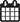

- 14 a 22 de Dezembro
- Curso "Novos Juizes" Sul, Faro
- Organização: FPS/CSF
- 30 e 31 de Janeiro
- 1ª parte do Estágio Surf Junior, Peniche
- Organização: FPS
- 8 a 16 de Fevereiro
- Curso "Novos Juizes" Grande Lisboa, Carcavelos
- Organização: FPS/CRCQL
- 14 a 16 de Fevereiro
- Curso "Novos Juizes" Açores, Ponta Delgada
- Organização: FPS
- 22 e 23 de Fevereiro
- 1ª etapa do Circuito Surf 2014, Costa de Caparica
- Organização: FPS/CSC
- 27 e 28 de Fevereiro
- 2ª parte do Estágio Surf Junior, Peniche
- Organização: FPS
- 7 e 8 de Junho
- 1ª etapa do Circuito Nacional de SUP Race, Aveiro
- Organização: FPS/Watertech Kayaks
- 14 e 15 de Junho
- 4ª etapa do Circuito Surf Esperanças 2014, Peniche
- Organização: FPS/PPSC
- 14 e 15 de Junho
- 3ª etapa do Circuito de Longboard 2014, Ericeira
- Organização: FPS/ESC
- 25 de Abril
- 1ª etapa do Circuito de Skimboard 2014, Sesimbra
- Organização: FPS/SSC
- 26 de Abril
- 1ª etapa do Circuito de Longboard 2014, Sesimbra
- Organização: FPS
- 27 de Abril
- 1ª etapa do Circuito Nacional de SUP Wave, Sesimbra
- Organização: FPS/SSC
- 3 e 4 de Maio
- 2ª etapa do Circuito Surf Esperanças 2014, Nazaré
- Organização: FPS/CDAN
- 10 e 11 de Maio
- 1ª etapa do Circuito Bodyboard 2014, Sesimbra
- Organização: FPS/SSC
- 24 e 25 de Maio
- 3ª etapa do Circuito Surf Esperanças 2014, Porto
- Organização: FPS/OAN
- 10 de Junho
- 2ª etapa do Circuito de Longboard 2014, Caparica
- Organização: FPS/CSC
- 14 a 16 de Fevereiro
- Curso "Novos Juizes" Açores, Ponta Delgada
- Organização: FPS
- 14 a 16 de Fevereiro
- Curso "Novos Juizes" Açores, Ponta Delgada
- Organização: FPS